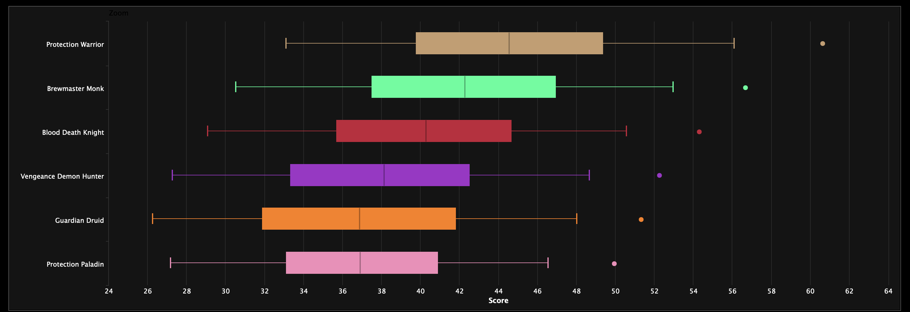
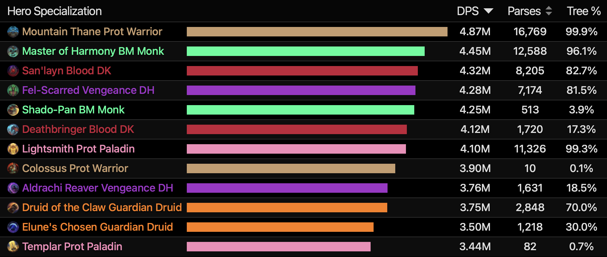
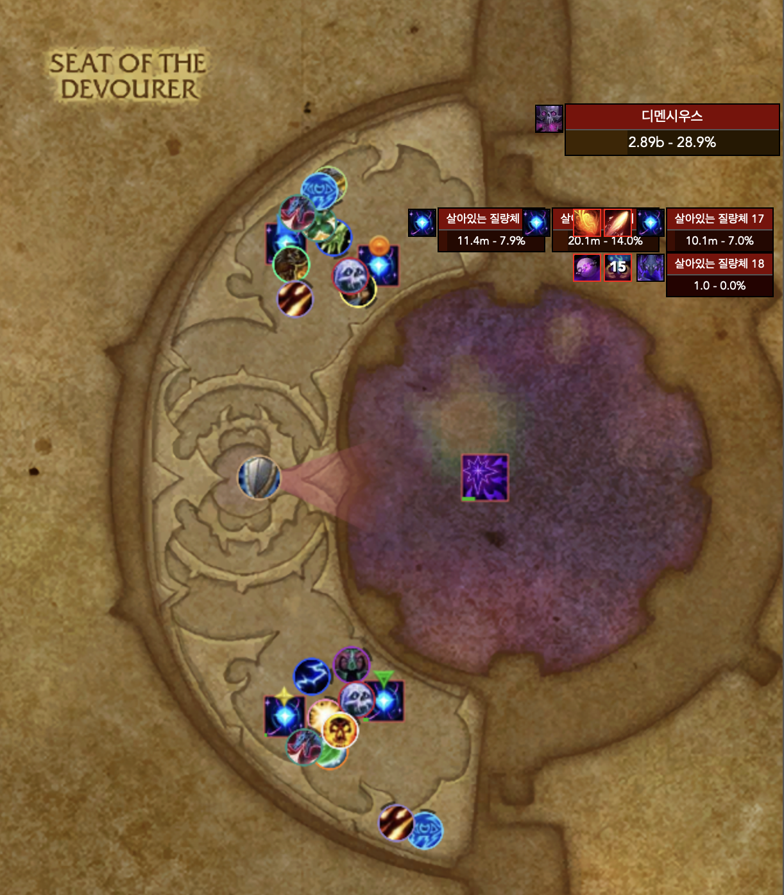
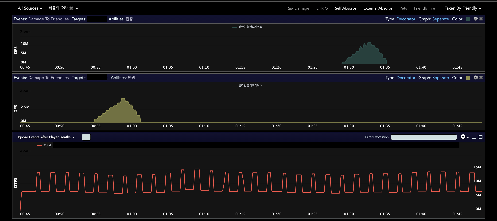
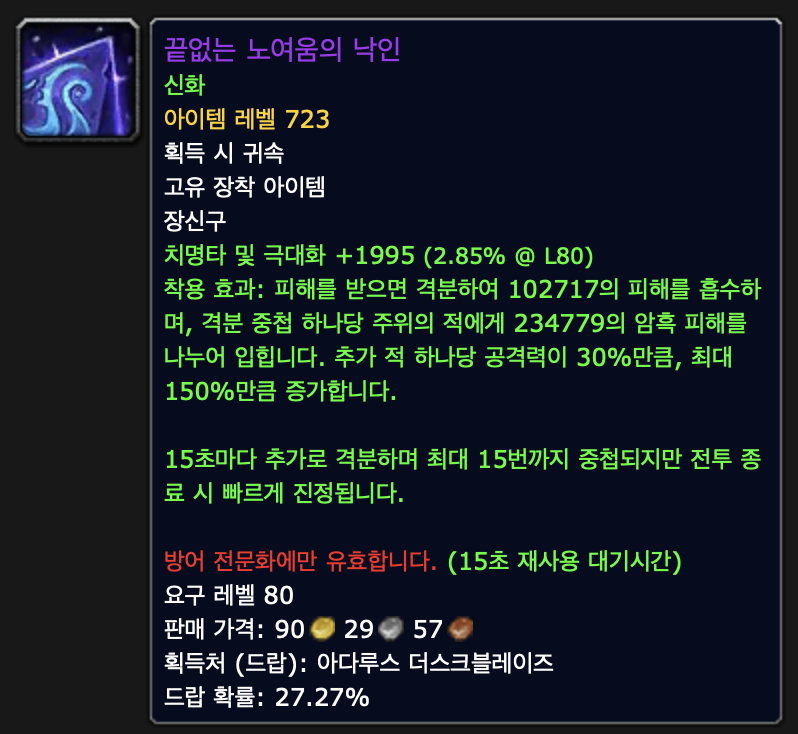
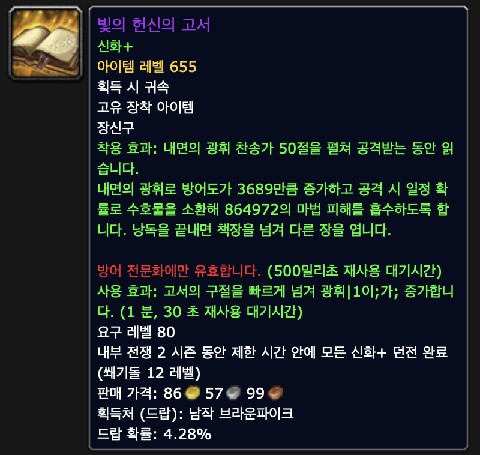
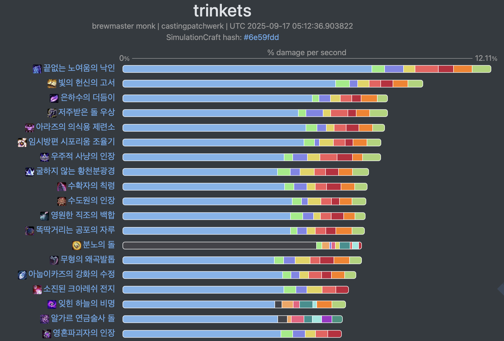

게임은 즐기려고 하는 것이다. 그렇기에 게임을 플레이 할때 현재 제일 좋은 직업을 플레이 하거나 본인이 선호하는 직업을 하기 마련이다. 가장 좋은 직업을 플레이 하기 이전에 해당 직업들이 이번 시즌에 왜 좋은지 그 이유를 알아보자는 취지에서 이 글을 작성하게 되었다.
1시즌 네룹아르 궁전은 딜의 최적화가 중요한 시즌이었고 2시즌 언더마인 해방전선은 공대원 전체가 한몸이 되어 패턴을 파홰하는 mass game 이었다면 3시즌 마나괴철로 종극점에서는 개개인의 무빙을 최적화하여 딜로스를 줄이는게 중요한 시즌이다. 탱커는 공략에 문제가 될 정도로 체급이 낮은 탱커는 없다. 그렇기에 시너지가 있는 딜러들 중에서 체급이 낮은 딜러들의 시너지를 탱커에서 채웠다. 힐러의 경우, 공대 광역힐을 봐주는 보존 기원사, 순간 찍힐을 봐주는 복원 주술사와 신성 성기사, 마지막으로 보존 기원사가 약한 타이밍을 매꿔주는 공대 배이스힐러 회복 드루이드를 채용한다. 사제 힐러들은 체급이 많이 낮아졌기에 기용하지 않았다. 운무 수도사의 경우 ptr에서의 성능이 좋았지만, 고질적인 마나 부족 문제로 인하여 기용하지 않았다.
기본적으로 Race to World First에 참가하는 길드들(Liquid, Echo, Method, etc.)은 DPS가 높은 탱커들을 선호한다. 특히 시너지가 있는 딜러들의 경우에는 직업의 성능이 나쁜 경우에 더욱 탱커나 힐러에서 최대한 시너지를 챙기고자 한다.


탱커의 딜 지표를 보면 전탱과 양조를 쓰는것이 아주 합당해 보인다. 무전, 그리고 풍운과 운무 모두 이번 티어에서 통계상 성적표가 아주 좋지 않다. 분전의 경우에는 그 성능이 준수하지만 이번 레이드 성격상 근딜이 많을수록 공략하기에 힘든 구조이기에 제외된 부분이 있다. 혈죽의 경우에도 딜이 나쁘지 않다. 하지만, 죽음의 손아귀 스킬이 극단적으로 필요한 경우 또는 고어핀드의 손아귀 스킬이 극단적으로 필요한 경우(디멘시우스)만 제외하면 dps의 차원에서 봤을 때에도 사용할 의미가 없다. 더욱이 냉죽이 개편으로 인해 그 성능이 근딜중에서 압도적이기 때문에 혈죽이 기용되는 경우는 없다. 실제로 Liquid 길드만 혈죽 전탱 조합을 사용하였고, 10위권 내에서는 모두 전탱 양조 조합을 사용하였다.
1넴 흐름망 파수꾼, 3넴 나진드리, 4넴 아라즈, 5넴 영혼 사냥꾼, 7넴 살라다르, 8넴 디멘시우스 전부 탱커가 힐러의 도움 없이 자생을 해야 하는 네임드들이다. 탱이 자생을 하는 두 가지의 조건 1. 강한 뎀감으로 체력 회복을 할 필요가 없다(전탱), 2. 강한 체력 회복으로 힐러의 케어가 없어도 혼자 살아남을 수 있다(양조, 혈죽). 이 두가지가 강한 탱커가 살아남은 시즌이다.
구체적으로 1넴, 4넴, 8넴과 같이 힐러의 시야에 탱이 없는 경우 와 3넴, 5넴, 7넴의 경우와 같이 탱이 본진에 위치하지만 탱커 버스터 스킬과 공대 피해가 같이 와서 케어를 할 수 없는 경우로 나뉘어진다.
 
8넴 디멘시우스의 경우 넴드의 평타가 다른 사람들을 밀치는 효과가 있기에 구조적으로 온탱 주위에 아군이 없는 모습이다 (왼쪽 사진)
5넴 영혼 사냥꾼의 경우 탱커의 탱 교대스킬(안광, 균열)을 서로 맞는 도중이지만, 본진에 가해지는 광역기의 데미지가 너무 크기에 (초당 피통의 10%~15%의 광역데미지) 뎀감 또는 자생이 불가능하다면 버틸 수 없는 구조이다. (오른쪽 사진)
탱커들의 장신구의 경우, 모든 탱커들이 같은 장신구를 사용한다.
 
NOTE 대부분의 상황에서 낙인과 고서 장신구를 사용하고 생존에 문제가 되는 경우에만 세포핵 장신구를 사용한다.
이 장신구들 이외에도 임시방편 시포리움 조율기 또는 은하수의 더듬이, 굴하지 않는 황천분광경 등 다양한 장신구들이 선택될 수 있지만, 딜적인 차원에서만 봤을 때 그 차이가 크다. 현재로썬, 6종류의 탱커 모두 낙인 + 고서 조합의 장신구를 사용한다고 봐도 무방하다. 생존에 문제가 되는 경우, 특히 복수 악마사냥꾼이나 보호 기사와 같이 유연성을 올리지 않으면서 마땅한 뎀감기가 부족하여 쉽게 급사가 나는 경우에는 8넴 디멘시우스가 드랍하는 세포핵 장신구를 사용하는 경우도 존재한다. Bloodmallet에서 보여주는 시뮬레이션(Simulationcraft, 심크) 결과에 따르면 직업에 따라 황천분광경이나 저주받은 돌 우상과 같은 장신구의 성능이 더 좋다고 나올 수 있다. 딜을 해야 할 타겟 숫자가 늘어나면 자연스럽게 낙인 + 고서 조합의 힘이 떨어지지만, 이번 레이드의 경우에는 황천분광경 + 돌 우상을 써야 할 정도로 극단적인 AoE 상황은 존재하지 않는다.

NOTE 양조 수도사의 Bloodmallet 사이트에서 추천하는 1타겟 상황에서의 장신구 심크 결과이다
낙인 장신구의 데미지가 상당함을 볼 수 있다
이번시즌 탱커의 전반적인 부분들을 살펴보았다. 이번 시즌은 탱커들의 티어 효과가 전부 데미지와 관련이 되어 있어 탱커의 dps가 전반적으로 저번 시즌에 비해 상승했다. 특히 그 중에서도 가장 강한 양조 수도사와 방어 전사가 데미지가 가장 강력하여 가장 많이 기용이 되고 있는 상황이다. 혈기 죽음의 기사의 경우, 디멘시우스에서 죽음의 손아귀 스킬이 필요하기 때문에 종종 기용이 된다.
본인이 위의 세 직업을 플레이 하지 않는다고 해도 걱정하지 말자. 위의 상황은 아주 극단적인 Race to World First를 참여하는 극소수의 길드들에 대한 내용이다. 만약 복수 악마사냥꾼으로 최정예를 하고 싶다 하면 그대로 하면 된다. 상위 공대의 택틱을 그대로 복사해서 쓰는 우리와 같은 후발주자들에게는 무슨 직업을 해도 네임드는 잡을 수 있기 때문이다.